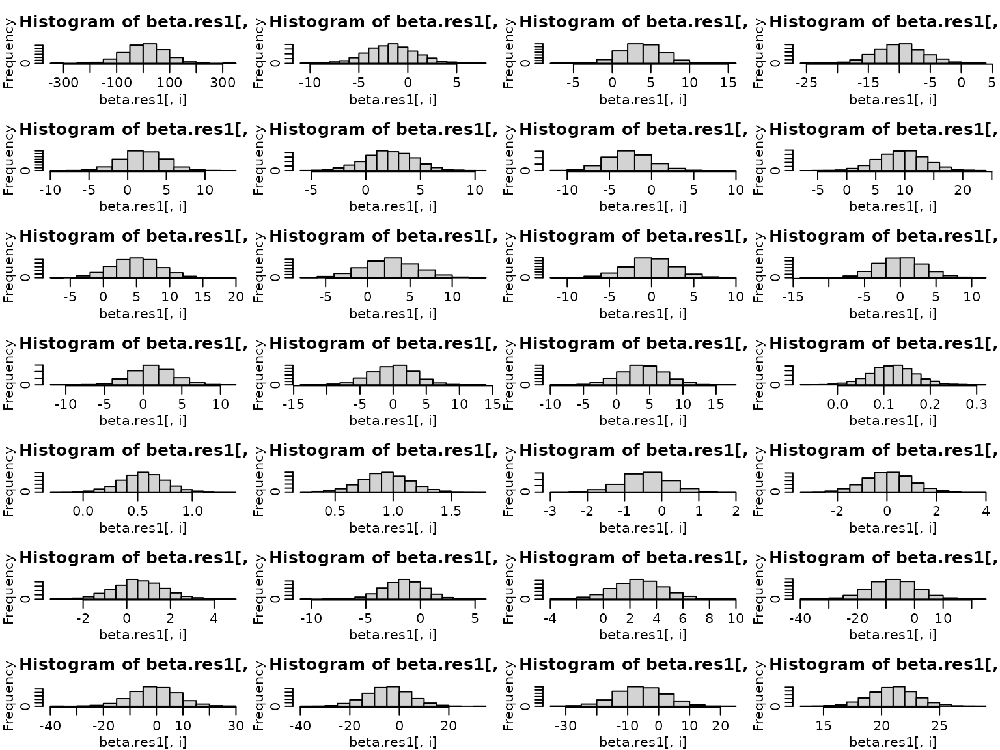
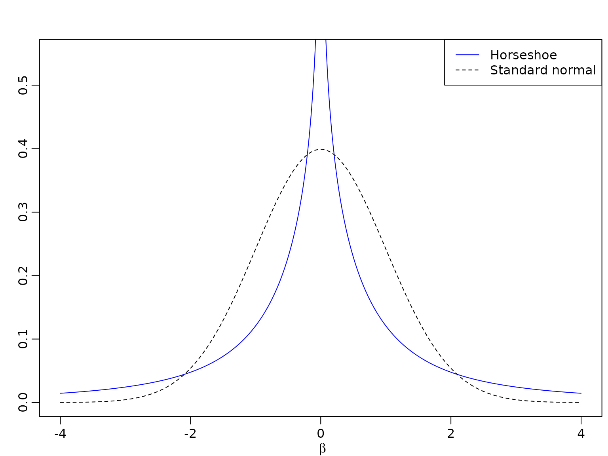
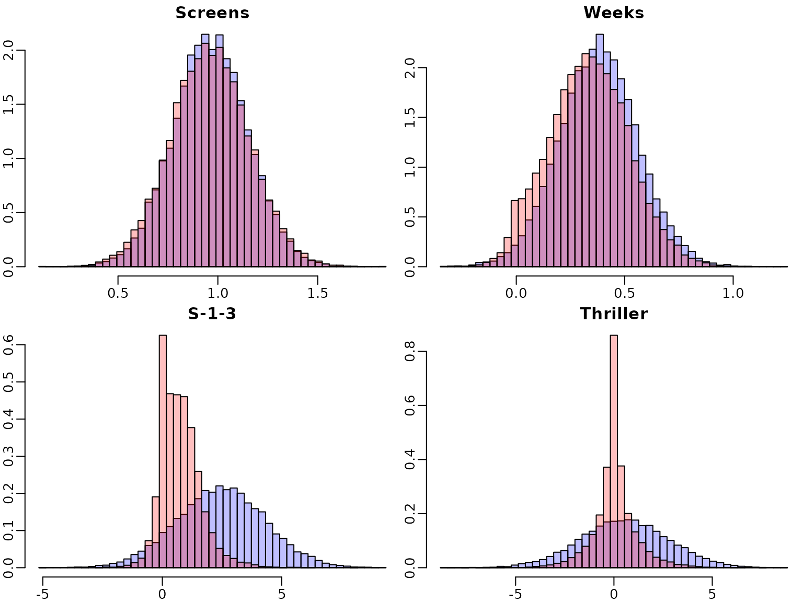

Chapter 6: The Bayesian Approach to Standard Regression Analysis
Chapter06.RmdSection 6.2 Bayesian Learning for a Standard Linear Regression Model
Example 6.1: Movie data
We use movie data provided within the package to illustrate Bayesian analysis of a regression model. The data set is a preprocessed version of the one provided by Lehrer and Xi (2017).
library("BayesianLearningCode")
data("movies", package = "BayesianLearningCode")Section 6.2.1 Bayesian Learning Under Improper Priors
Example 6.2: Movie data
Next, we prepare the variables for regression analysis. We define the
response variable OpenBoxOffice as y and use
as covariates the twitter volume scores 4-6 and 1-3 weeks before the
film starts. For better interpretation we center the covariates at their
means. Hence the intercept is the sales on the opening weekend box
office for a film with a mean value score of twitter post in weeks 4-6
and 1-3 before its start.
y <- movies[, "OpenBoxOffice"]
covs <- c("Vol-4-6", "Vol-1-3")
covs.cen <- scale(movies[, covs], scale = FALSE)
N <- length(y) # number of observations
X <- as.matrix(cbind("Intercept" = rep(1, N), covs.cen)) # regressor matrix
d <- dim(X)[2] # number regression effectsNext we compute the parameters of the posterior of the regression effects under the improper prior .
BN <- solve(crossprod(X))
Xy <- t(X) %*% y
beta.hat <- BN%*%Xy
SSR <- as.numeric(crossprod(y-X%*%beta.hat))
cN <- (N-d)/2
CN <- SSR/2
post.sigma<-(CN/cN)*BN
post.sd=sqrt(diag(post.sigma))
knitr::kable(round(cbind(qt(0.025,df=2*cN)*post.sd+beta.hat, beta.hat,
qt(0.975,df=2*cN)*post.sd+beta.hat),3),
col.names=c("2.5 quantile","posterior mean","97.5 quantile"))| 2.5 quantile | posterior mean | 97.5 quantile | |
|---|---|---|---|
| Intercept | 16.870 | 19.11 | 21.350 |
| Vol-4-6 | -23.442 | -19.72 | -15.997 |
| Vol-1-3 | 21.541 | 25.35 | 29.159 |
We can also plot the marginal posterior distributions.
if (pdfplots) {
pdf("6-4_1.pdf", width = 8, height = 3)
par(mar = c(2.5, 1.5, 1.5, .1), mgp = c(1.6, .6, 0))
}
par(mfrow = c(1, 3))
for (i in seq_len(nrow(beta.hat))) {
curve(dt((x-beta.hat[i])/post.sd[i], df=2*cN),
from=beta.hat[i]- 4*post.sd[i], to=beta.hat[i]+ 4*post.sd[i],
ylab="", xlab="" , main=rownames(beta.hat)[i])
} ### 6.2.2 Bayesian Learning under Conjugate Priors
### 6.2.2 Bayesian Learning under Conjugate Priors
Next we consider regression analysis under a conjugate prior. For this we define a function that yields the parameters of the posterior distribution.
regression_conjugate <- function(y, X, b0 = 0, B0 = 1,
c0 = 0.01, C0 = 0.01) {
d <- ncol(X)
if (length(b0) == 1L) b0 <- rep(b0, d)
if (!is.matrix(B0)) {
if (length(B0) == 1L) {
B0 <- diag(rep(B0, d))
} else {
B0 <- diag(B0)
}
}
B0.inv <- solve(B0)
BN.inv <- solve(B0)+crossprod(X)
BN <- solve(BN.inv)
bN <- BN%*% (B0.inv%*%b0+ t(X) %*% y)
cN <- c0+N/2
SS.eps <- as.numeric(crossprod(y) + t(b0)%*%B0.inv%*%b0 -
t(bN)%*%BN.inv%*%bN)
CN <- C0+SS.eps/2
list(bN=bN,BN=BN,cN=cN, CN=CN)
}We perform the regression analysis and report the posterior mean with the 2.5% and 97.5% quantile of the posterior distribution.
res_conj1<-regression_conjugate(y,X,b0=0, B0=10)
post.sd.conj1=sqrt(diag((res_conj1$CN/res_conj1$cN)*res_conj1$BN))
res_conj2<-regression_conjugate(y,X,b0=0, B0=1)
post.sd.conj2=sqrt(diag((res_conj2$CN/res_conj2$cN)*res_conj2$BN))
knitr::kable(round(cbind(qt(0.025,df=2*res_conj1$cN)*post.sd.conj1+res_conj1$bN,
res_conj1$bN,
qt(0.975,df=2*res_conj1$cN)*post.sd.conj1+ res_conj1$bN),3),
col.names=c("2.5 quantile","posterior mean","97.5 quantile"))| 2.5 quantile | posterior mean | 97.5 quantile | |
|---|---|---|---|
| Intercept | 16.874 | 19.090 | 21.305 |
| Vol-4-6 | -23.273 | -19.598 | -15.923 |
| Vol-1-3 | 21.463 | 25.223 | 28.983 |
We plot the marginal posteriors (in blue) together with those under the improper prior.
if (pdfplots) {
pdf("6-4_2.pdf", width = 8, height = 3)
par(mar = c(2.5, 1.5, 1.5, .1), mgp = c(1.6, .6, 0))
}
par(mfrow = c(1, 3))
for (i in seq_len(nrow(beta.hat))) {
curve(dt((x-beta.hat[i])/post.sd[i], df=2*cN),
from=beta.hat[i]- 4*post.sd[i], to=beta.hat[i]+ 4*post.sd[i],
ylab="", xlab="" , main=rownames(beta.hat)[i])
curve(dt((x- res_conj1$bN[i])/post.sd.conj1[i], df=2* res_conj1$cN),
from= res_conj1$bN[i]- 4*post.sd.conj1[i],
to= res_conj1$bN[i]+ 4*post.sd.conj1[i],
add=TRUE, col=2,lty=2,lwd=2)
curve(dt((x- res_conj2$bN[i])/post.sd.conj2[i], df=2* res_conj2$cN),
from= res_conj2$bN[i]- 4*post.sd.conj2[i],
to= res_conj2$bN[i]+ 4*post.sd.conj2[i],
add=TRUE, col=3,lty=4,lwd=2)
legend("topright", c("improper", "B0=10", "B0=1"),
col = 1:3, lty = c(1,2,4),lwd=c(1,2,2))
} There is little difference to the improper prior for , however we see shrinkage to zero for . The effect of the prior is given by the weight matrix , which is computed for the prior $\Normal\{\textbf{0}, \textbf{I}\}$ below.
W=res_conj2$BN%*%solve(diag(rep(1,d)))
print(round(W,3))
#> [,1] [,2] [,3]
#> Intercept 0.011 0.000 0.000
#> Vol-4-6 0.000 0.028 -0.024
#> Vol-1-3 0.000 -0.024 0.029We see that weight of the prior mean is much smaller for the intercept than for the effects of the two covariates.
6.3 Regression Analysis under the Semi-Conjugate Prior
We now include not only the volume scores from twitter posts 4-6 and
1-3 weeks before starting of the film, but use also the information on
the sentiments in these time periods, the genres and , the MPAA ratings,
the budget, the number of weeks as well as screens the film was planned
to be shown. There is only one film with MPAA rating
G'', hence we merge the two ratingsG’’ and ``PG’’ into one
category which we define as our baseline. Additionally we center all
covariates at zero.
movies["PG"] <- NULLNext, we center all covariates at zero and define the regressor matrix.
covs <- c("Comedy", "Thriller","PG13", "R", "Budget", "Weeks", "Screens",
"S-4-6", "S-1-3", "Vol-4-6", "Vol-1-3")
covs.cen <- scale(movies[, covs], scale = FALSE)
N <- length(y) # number of observations
X <- cbind("Intercept" = rep(1, N), covs.cen) # regressor matrix
d <- dim(X)[2] # number regression effects
p <- d - 1 # number of regression effects without interceptTo estimate the parameters of the regression model under a rather flat semi-conjugate prior we set up the Gibbs sampler.
set.seed(1)
reg_semiconj <- function(y, X, b0 = 0, B0 = 10000, c0 = 2.5, C0 = 1.5,
burnin = 1000L, M = 5000L) {
d <- dim(X)[2]
B0inv <- diag(rep(1 / B0, d), nrow = d)
b0 <- rep(b0, length.out = d)
# define quantities for the Gibbs sampler
XX <- crossprod(X)
Xy <- t(X) %*% y
cN <- c0 + N / 2
# prepare storing of results
betas <- matrix(NA_real_, nrow = M, ncol = d)
colnames(betas) <- colnames(X)
sigma2s <- rep(NA_real_, M)
# starting value for sigma2
sigma2 <- var(y) / 2
for (m in 1:(burnin + M)) {
# sample beta from the full conditional
BN <- solve(B0inv + XX / sigma2)
bN <- BN %*% (B0inv %*% b0 + Xy / sigma2)
beta <- t(mvtnorm::rmvnorm(1, mean = bN, sigma = BN))
# sample sigma^2 from its full conditional
eps <- y - X %*% beta
CN <- C0 + crossprod(eps) / 2
sigma2 <- rinvgamma(1, cN, CN)
if (m > burnin) {
betas[m - burnin, ] <- beta
sigma2s[m- burnin] <- sigma2
}
}
return(post.draws=list(betas = betas, sigma2s=sigma2s) )
} We define the prior parameters and rum the sampler for 10000 iterations after a burnin of 1000.
post.draws <- reg_semiconj(y,X,b0 = 0, B0 = 10000, c0 = 2.5, C0 = 1.5,
burnin = 1000L, M = 5000L)To summarize the results nicely, we compute equal-tailed 95% confidence intervals for the regression effects.
res.mcmc <- function(x, lower = 0.025, upper = 0.975)
c(quantile(x, lower), mean(x), quantile(x, upper))
beta.sc<-post.draws$betas
res_beta.sc<- t(apply(beta.sc, 2, res.mcmc))
colnames(res_beta.sc) <- c("2.5%", "Mean", "97.5%")
rownames(res_beta.sc) <- c("Intercept", covs)
knitr::kable(round(res_beta.sc, 3))| 2.5% | Mean | 97.5% | |
|---|---|---|---|
| Intercept | 17.455 | 19.100 | 20.719 |
| Comedy | -2.730 | 1.422 | 5.535 |
| Thriller | -4.104 | 0.482 | 4.911 |
| PG13 | -8.412 | -2.756 | 3.008 |
| R | -3.604 | 2.164 | 8.170 |
| Budget | 0.041 | 0.128 | 0.215 |
| Weeks | 0.015 | 0.377 | 0.744 |
| Screens | 0.597 | 0.964 | 1.326 |
| S-4-6 | -4.855 | -1.279 | 2.387 |
| S-1-3 | -1.262 | 2.454 | 6.178 |
| Vol-4-6 | -19.741 | -16.763 | -13.858 |
| Vol-1-3 | 19.377 | 22.400 | 25.422 |
We do the same for the error variances.
res_sigma2.sc <- res.mcmc( post.draws$sigma2s)
names(res_sigma2.sc) <- colnames(res_beta.sc)
knitr::kable(t(round(res_sigma2.sc, 3)))| 2.5% | Mean | 97.5% |
|---|---|---|
| 47.338 | 63.993 | 87.332 |
Next we will use the horseshoe prior to analyze the data. We start with a visual comparison of the normal and the horseshoe prior.
beta <- seq(from = -4, to = 4, by = 0.01)
# Horseshoe prior
# Approximated by the result of Theorem 1 in Carvalho and Polson (2010)
c <- 1 / sqrt(2 * pi^3)
l <- c / 2 * log(1 + 4 / beta^2)
u <- c * log(1 + 2 / beta^2)
par(mfrow = c(1, 1))
plot(beta, (u + l) / 2, type = "l", ylim = c(0, 0.55), xlab = expression(beta),
ylab = "", lty = 1, col = "blue")
lines(beta, dnorm(beta), lty = 2) # Standard normal prior
legend('topright', legend = c("Horseshoe", "Standard normal"), lty = 1:2,
col = c("blue", "black"))
Next we set up the Gibbs sampler under the horse-shoe prior.
reg_hs <- function(y, X, b0=0, B0 = 10000, c0 = 2.5, C0 = 1.5,
burnin = 1000L, M = 5000L) {
d <- dim(X)[2]
p <- d-1
B00inv <- 1 / B0 # prior precision for the intercept
b0 <- rep(b0, length.out = d)
# prepare storing of results
betas <- matrix(NA_real_, nrow = M, ncol = d)
colnames(betas) <- colnames(X)
sigma2s<- rep(NA_real_, M)
tau2s <- matrix(NA_real_, nrow = M, ncol = p)
lambda2s <- rep(NA_real_, M)
# define quantities for the Gibbs sampler
XX <- crossprod(X)
Xy <- t(X) %*% y
# set starting values
sigma2 <- var(y) / 2
tau2 <- rep(1, p)
lambda2 <- 1
for (m in seq_len(burnin + M)) {
# sample beta from the full conditional
B0inv <- diag(c(B00inv, 1 / (lambda2 * tau2)))
BN <- solve(B0inv + XX / sigma2)
bN <- BN %*% (B0inv %*% b0 + Xy / sigma2)
beta <- t(mvtnorm::rmvnorm(1, mean = bN, sigma = BN))
beta.star <- beta[2:d]
# sample sigma^2 from its full conditional
eps <- y - X %*% beta
CN <- C0 + crossprod(eps) / 2
sigma2 <- rinvgamma(1, cN, CN)
# sample tau^2
xi <- rexp(p, rate = 1 + 1 / tau2)
tau2 <- rinvgamma(p, 1, xi + 0.5 * beta.star^2 / lambda2)
# sample lambda^2
zeta <- rexp(1, rate = 1 + 1 / lambda2)
lambda2 <- rinvgamma(1, (p + 1) / 2, zeta + 0.5 * sum(beta.star^2 / tau2))
# store results
if (m > burnin) {
betas[m - burnin, ] <- beta
sigma2s[m- burnin] <- sigma2
tau2s[m- burnin,] <- tau2
lambda2s[m- burnin] <- lambda2
}
}
return(post.draws=list(betas = betas, sigma2s=sigma2s, tau2s=tau2s,lambda2s=lambda2s))
} We use the same prior on the intercept and the error variance as as in the semi-conjugate prior, but the horseshoe prior on the regression effects.
post.draws.hs<- reg_hs(y,X)Again, we show the posterior mean estimates and equal-tailed 95% credibility intervals in a table. First, for the regressions effects.
beta.hs<-post.draws.hs$betas
res_beta.hs <- t(apply(beta.hs, 2, res.mcmc))
colnames(res_beta.hs) <- c("2.5%", "Mean", "97.5%")
rownames(res_beta.hs) <- colnames(X)
knitr::kable(round(res_beta.hs, 3))| 2.5% | Mean | 97.5% | |
|---|---|---|---|
| Intercept | 17.425 | 19.110 | 20.793 |
| Comedy | -1.673 | 0.281 | 2.914 |
| Thriller | -2.372 | 0.034 | 2.457 |
| PG13 | -6.376 | -1.774 | 0.895 |
| R | -1.361 | 0.955 | 5.006 |
| Budget | 0.032 | 0.125 | 0.218 |
| Weeks | -0.013 | 0.329 | 0.700 |
| Screens | 0.557 | 0.949 | 1.338 |
| S-4-6 | -1.635 | 0.240 | 1.721 |
| S-1-3 | -0.582 | 0.746 | 2.801 |
| Vol-4-6 | -19.227 | -16.160 | -13.107 |
| Vol-1-3 | 18.524 | 21.767 | 25.043 |
And for the variance.
res_sigma2.hs <- res.mcmc(post.draws.hs$sigma2s)
names(res_sigma2.hs) <- colnames(res_beta.hs)
knitr::kable(t(round(res_sigma2.hs, 3)))| 2.5% | Mean | 97.5% |
|---|---|---|
| 51.434 | 70.114 | 95.554 |
We next have a look at the posterior distributions. First under the semi-conjugate priors and then under the horseshoe prior. Note that the posterior distributions are symmetric under the semi-conjugate prior, whereas this is not the case under the horseshoe prior.
for (i in seq_len(d)) {
breaks <- seq(min(beta.sc[,i], beta.hs[,i]), max(beta.sc[,i], beta.hs[,i]),
length.out = 100)
hist(beta.sc[,i], main = colnames(X)[i], breaks = breaks, xlab = "", ylab = "")
hist(beta.hs[,i], main = colnames(X)[i], breaks = breaks, xlab = "", ylab = "")
}
For illustration purposes, we overlay four selected marginal posteriors in order to illustrate the shrinkage effect.
selection <- c("Screens", "Weeks", "S-1-3", "Thriller")
for (i in selection) {
breaks <- seq(min(beta.sc[,i], beta.hs[,i]), max(beta.sc[,i], beta.hs[,i]),
length.out = 50)
h1 <- hist(beta.sc[,i], breaks = breaks, plot = FALSE)
h2 <- hist(beta.hs[,i], breaks = breaks, plot = FALSE)
col <- c(rgb(0, 0, 1, 0.25), rgb(1, 0, 0, 0.25))
plot(h1, main = i, xlab = "", ylab = "", freq = FALSE,
ylim = c(0, max(h1$density, h2$density)), col = col[1])
plot(h2, xlab = "", ylab = "", freq = FALSE, col = col[2],
add = TRUE)
}
We next investigate the trace plots.
par(mfrow = c(6, 2))
for (i in seq_len(d)) {
plot(beta.sc[,i], type = "l", xlab = "", ylab = "", main = colnames(beta.sc)[i])
plot(beta.hs[,i], type = "l", xlab = "", ylab = "", main = colnames(beta.sc)[i])
}

To sum up, we visualize the posterior of the effects and corresponding (square root of the) shrinkage parameters. For visual inspection, we create a gap plot, where we remove the largest 5% of the local shrinkage parameter draws and mirror them around 0. That way, we can easily identify ``significant’’ effects via clear bimodality or even a gap around zero – hence the name.
tau2.hs <- post.draws.hs$tau2s
alpha <- 0.05
truncate <- function(x, alpha) x[x <= quantile(x, 1 - alpha)]
tau2.hs.trunc <- apply(tau2.hs, 2, truncate, alpha = alpha)
tau.hs.trunc.mirrored <- rbind(sqrt(tau2.hs.trunc), -sqrt(tau2.hs.trunc))On the left, we see the regression effects posteriors. On the right, we visualize the gap plot.
for (i in seq_len(ncol(beta.hs))) {
breaks <- seq(min(beta.hs[, i]), max(beta.hs[, i]), length.out = 100)
hist(beta.hs[, i], breaks = breaks, xlab = "", ylab = "",
main = c("Intercept", covs)[i])
if (i == 1) {
plot.new()
} else {
breaks <- seq(min(tau.hs.trunc.mirrored[, i - 1]),
max(tau.hs.trunc.mirrored[, i - 1]), length.out = 100)
hist(tau.hs.trunc.mirrored[, i - 1], breaks = breaks, xlab = "", ylab = "",
main = covs[i - 1])
}
}